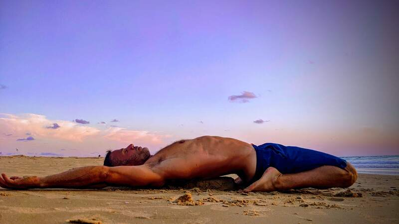

הבלוג לאורח חיים בריא
אורח חיים בריא הוא שילוב מאוזן של תזונה נכונה, פעילות גופנית סדירה, שינה איכותית וניהול מתחים, שמוביל לשיפור ברווחה הגופנית והנפשית לאורך זמן.

נולדתי בשנות ה-70, וכשהייתי נער אורח חיים בריא היה חלק בלתי נפרד מהשגרה שלי. בזמנו, כשהאינטרנט היה בחיתוליו, נאלצתי לדווש על אופניי לספרייה העירונית כדי לחפש ספרים ומידע בנושא.
עם השנים, החיים השתנו: הצבא, הלימודים, המשפחה והעבודה תפסו את קדמת הבמה, ואט-אט זנחתי את ההרגלים הבריאים. ואז, בשנת 2019, פרצה מגפת הקורונה. עברנו לעבוד מהבית, תוך כדי ניהול הילדים שנותרו בביתם גם הם. בכל יום, מצאתי את עצמי לוקח אותם לפארק הכושר השכונתי כדי להעסיק אותם. המגפה, למרבה האירוניה, קצת החזירה פורפורציה לחיים והבהירה מה באמת חשוב.
היום, אחרי שעברתי את גיל 45, אני מקפיד שוב על אורח חיים בריא ומרגיש טוב יותר מאי פעם.
בשונה מתחילת שנות ה-90, כיום האינטרנט מוצף בתוכן בנוגע לאורח חיים בריא – אך לא כל התוכן אמין או מבוסס. דווקא בנושאים שקשורים לבריאותנו, חשוב לסנן את המידע ולוודא שהוא מגיע ממקורות מהימנים.
שמי גלעד, אני נשוי לטליה ואבא ליואב ויעל. יש לי תואר דוקטור במדעי המחשב מהטכניון, ואני מקפיד על אורח חיים בריא. מטרת הבלוג הזה היא להנגיש מידע אמין וברור המבוסס על מקורות מדעיים. כל פוסט יתבסס על סקירת מאמרים שפורסמו בכתבי עת מוכרים ושעברו ביקורת עמיתים. בנוסף, אשתף מהניסיון האישי שלי לאורך הדרך.
ביצוע ניסוי בצורה נכונה חיוני להסקת מסקנות מהימנות. ללא הקפדה על עקרונות מדעיים ברורים, תוצאות הניסוי עלולות להטעות ולגרום לפרשנות שגויה של הנתונים.
🍩 סוכר
צריכת סוכר מופרזת עלולה להוביל לבעיות בריאותיות כמו השמנה, סוכרת, מחלות לב, פגיעה בשיניים, מצבי דלקת ושינויים במצב הרוח.
🛀 חשיפה לקור
חשיפה לקור נחשבת כמועילה להפחתת דלקות, הקלה על כאבי שרירים, שיפור המערכת החיסונית ועוד, אך אילו מהסגולות הללו אכן נתמכות במחקר מדעי?
🦶 יחפנות
נעלי Barefoot מעוצבות כדי לדמות הליכה יחפה, מחזקות את שרירי כף הרגל, משפרות יציבה ומפחיתות עומס על המפרקים, מה שתורם לאורח חיים בריא יותר.
☀️ שמש
חשיפה מתונה ומוגנת לשמש תורמת לבריאות הגוף, אך יש להיזהר מחשיפה מוגזמת שעלולה להזיק לעור.
🤕 דלקות
דלקת היא תגובה של מערכת החיסון לנזק או זיהום, שמטרתה להגן על הגוף, אך במצבה הכרוני עלולה להזיק לרקמות בריאות.
🛌 שינה
שינה היא תהליך חיוני לשיקום הגוף והנפש, המשפר תפקוד קוגניטיבי ובריאות כללית, בעוד שמחסור בשינה עלול לגרום להשלכות בריאותיות חמורות.
🧘♀️ צום
צום לסירוגין, כאשר מבוצע בצורה מאוזנת, עשוי לתרום לשיפור הבריאות על ידי שיפור חילוף החומרים, איזון רמות הסוכר, וסיוע במניעת מחלות כרוניות.
☕ קפה
קפה הוא משקה פופולרי שמגביר עירנות ויכול לסייע במניעת מחלות כמו סוכרת ומחלות לב, אך צריכתו המופרזת עלולה לגרום לבעיות כמו קשיי שינה ותלות.
🫁 נשימה
נשימה נכונה משפרת את הבריאות הכללית על ידי הפחתת מתח, שיפור ריכוז ואנרגיה, ותמיכה באיזון פיזי ומנטלי.
🌊 מים
שתיית מים חיונית לבריאות הגוף, תומכת בתהליכים כמו וויסות טמפרטורה וסילוק רעלים, ומונעת התייבשות שיכולה לגרום לעייפות וכאבי ראש. מומלץ לשתות לפחות 8 כוסות ביום.
🧖 סאונה וג'קוזי
סאונה וג'קוזי יכולים לתרום לאורח חיים בריא בכך שהם מסייעים בהרפיית שרירים, שיפור זרימת הדם והפחתת מתח נפשי. השימוש בחום הסאונה מעודד ניקוי רעלים וחיזוק מערכת החיסון, בעוד הג'קוזי מרגיע את הגוף ומפחית מתחים.
🦸 מזונות על
מזונות על הם מזונות עשירים בערכים תזונתיים כמו ויטמינים, מינרלים ונוגדי חמצון, שמסייעים בחיזוק מערכת החיסון, תפקוד הלב ושמירה על אנרגיה גבוהה. שילובם בתזונה כחלק מאורח חיים בריא מספק לגוף רכיבים טבעיים החיוניים לבריאות ולמניעת מחלות.
💺 ישיבה
ישיבה ממושכת מזיקה לבריאות, ולכן חשוב לשלב תנועה ופעילות גופנית במהלך היום כדי לשמור על אורח חיים בריא.
💆 עיסויים
עיסויים תורמים לשיפור הבריאות על ידי הקלה על מתח וכאבים, שיפור זרימת הדם ואיכות השינה, ומשלבים טוב עם פעילות גופנית ותזונה נכונה.
🥚 חלבונים
חלבונים חשובים לאורח חיים בריא בכך שהם תומכים בבניית שרירים, תיקון רקמות ושמירה על מערכת חיסון. צריכתם עוזרת לתחושת שובע ולניהול משקל, וחשוב לשלבם בתזונה מאוזנת יחד עם פעילות גופנית ושינה מספקת.